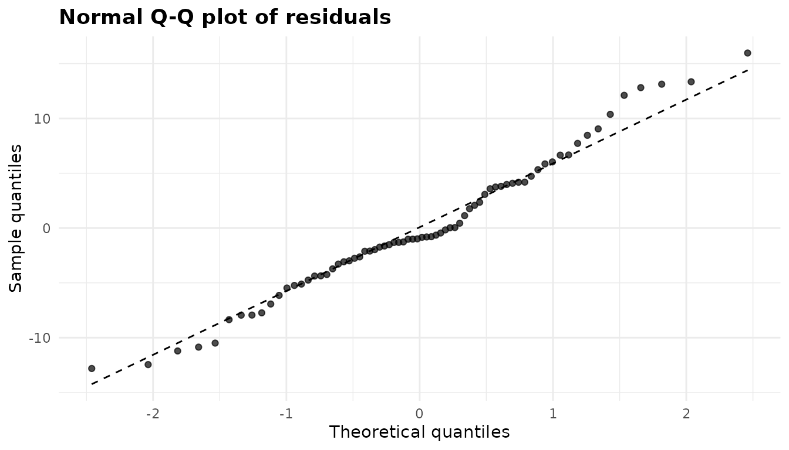
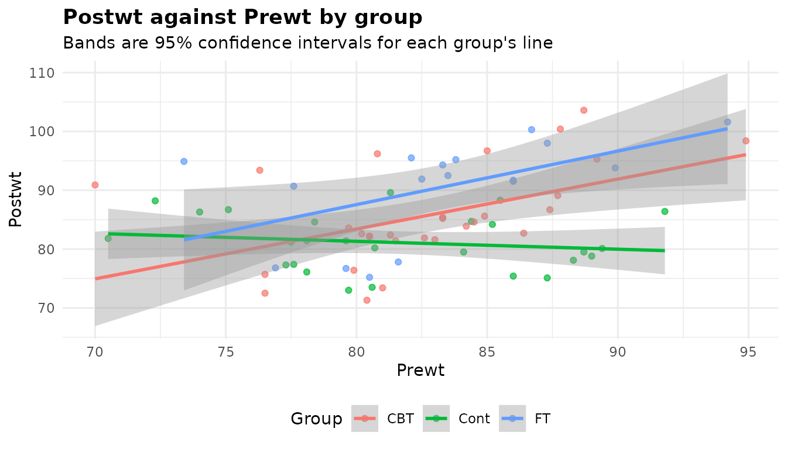

ANCOVA: comparing groups at the same value of a covariate
Source:vignettes/articles/ancova.Rmd
ancova.Rmdanova_ancova() compares the mean of a numeric response
across groups while adjusting for one or more numeric covariates. Use it
when something you measured before the groups could differ – a baseline
score, a starting weight – also predicts the outcome: adjusting for it
removes that source of noise and compares the groups at the same value
of the covariate. With no covariate, use anova_welch() or
anova_glm(); with several responses,
anova_manova() accepts covariates too. The decision guide covers the choice in more
detail.
The data
MASS::anorexia records the weight (in pounds) of 72
young women with anorexia before and after a period of treatment:
cognitive behavioural treatment (CBT), family treatment
(FT) or a control condition (Cont).
an <- MASS::anorexia
head(an)
#> Treat Prewt Postwt
#> 1 Cont 80.7 80.2
#> 2 Cont 89.4 80.1
#> 3 Cont 91.8 86.4
#> 4 Cont 74.0 86.3
#> 5 Cont 78.1 76.1
#> 6 Cont 88.3 78.1
table(an$Treat)
#>
#> CBT Cont FT
#> 29 26 17
aggregate(cbind(Prewt, Postwt) ~ Treat, data = an, FUN = mean)
#> Treat Prewt Postwt
#> 1 CBT 82.68966 85.69655
#> 2 Cont 81.55769 81.10769
#> 3 FT 83.22941 90.49412The groups start at slightly different weights, and a patient’s
weight afterwards depends partly on where she started (the correlation
between the two is 0.33). The question an ANCOVA answers is: for
patients of the same starting weight, does the treatment make a
difference to the weight afterwards? Postwt is the
response, Treat the grouping variable and
Prewt the covariate.
Fitting the model
Columns are named as character strings: the response, then the grouping variable(s), then the covariate(s).
fit <- anova_ancova(an, "Postwt", "Treat", "Prewt")
fit
#> Analysis of covariance (Type III)
#> ---------------------------------
#> Call: anova_ancova(data = an, response = "Postwt", groups = "Treat", covariates = "Prewt")
#> Observations used: 72
#>
#> Omnibus test (Type III, F)
#> term sum_sq df statistic p_value
#> 1 Prewt 503.4 1 11.680 0.0010866
#> 2 Treat 785.1 2 9.107 0.0003215
#> 3 Prewt:Treat 466.5 2 5.411 0.0066656
#> 4 Residuals 2845.0 66 NA NA
#>
#> Notes
#> - Covariate(s) mean-centred before fitting (Prewt: 82.41), so the intercept and the Type III group row refer to the covariate mean rather than to covariate = 0. $emmeans are evaluated at the covariate mean either way.
#> - Slopes differ across groups (p = 0.006666), so the covariate-by-group interaction was retained. The group row of the ANOVA table is then a comparison at the covariate mean, not a constant adjusted difference: read $simple_slopes and $emmeans instead.
#> - The model was chosen by a test on these same data, and the p-values below do not allow for that choice: given that the test retained the slope terms, they can be noticeably too small, especially in small samples. Setting force_interaction = TRUE in advance avoids the selection step; the group row is then a valid comparison at the covariate mean whether or not the slopes differ.
#>
#> Plots available: residuals, qq, covariate, emmeans
#> (use plot(x, which = "residuals"))Reading the printout from the top:
- The method line says the tests use Type III sums of squares (the
default
type = "III", fitted under sum-to-zero contrasts). -
Observations usedis the number of rows in$data_used. Rows with a missing value in any analysed column are dropped and counted in$n_removed; there are none here. - The omnibus table has a
Prewt:Treatrow because the function fitted two candidate models and a homogeneity-of-slopes test chose the one with a separate slope for each group (see the next section). - The notes say what the function decided and why. Read them on every fit; they are discussed below.
-
Plots availablelists the ggplot2 objects in$plots.
summary(fit) prints all of this and then the assumption
checks, effect sizes, marginal means, pairwise comparisons, the slopes
test and the per-group slopes. The rest of this article takes those
components one at a time.
The homogeneity-of-slopes test
Classical ANCOVA assumes that the covariate has the same slope in
every group, so that the groups differ by a constant amount whatever the
covariate value. anova_ancova() checks this before anything
else. It fits two candidate models – the covariate entered additively,
and the same model plus the product of the covariate with the grouping
terms – and compares them with one nested F test:
fit$slopes_test
#> comparison df statistic p_value
#> 1 additive vs covariate-by-group interaction 2 5.411231 0.006665591
#> homogeneous
#> 1 FALSEHere the test rejects (p = 0.00667), so homogeneous is
FALSE and the interaction model was fitted. Both candidates
are kept, so the one not chosen is still available, and the comparison
can be reproduced from them:
deparse(formula(fit$model_additive))
#> [1] "Postwt ~ Prewt + Treat"
deparse(formula(fit$model_interaction))
#> [1] "Postwt ~ Prewt + Treat + Prewt:Treat"
anova(fit$model_additive, fit$model_interaction)
#> Analysis of Variance Table
#>
#> Model 1: Postwt ~ Prewt + Treat
#> Model 2: Postwt ~ Prewt + Treat + Prewt:Treat
#> Res.Df RSS Df Sum of Sq F Pr(>F)
#> 1 68 3311.3
#> 2 66 2844.8 2 466.48 5.4112 0.006666 **
#> ---
#> Signif. codes: 0 '***' 0.001 '**' 0.01 '*' 0.05 '.' 0.1 ' ' 1When the slopes differ, the thing to read is the slope in each group,
$simple_slopes (from emmeans::emtrends()):
print(fit$simple_slopes[, c("Treat", "slope", "se", "conf_low", "conf_high",
"p_value")], digits = 3)
#> Treat slope se conf_low conf_high p_value
#> 1 CBT 0.848 0.256 0.337 1.359 0.00151
#> 2 Cont -0.134 0.230 -0.594 0.325 0.56173
#> 3 FT 0.909 0.327 0.256 1.562 0.00709In both active treatments a heavier start goes with a heavier finish
(about 0.85 and 0.91 lb per lb), but in the control group there is
essentially no relation (-0.13, with an interval that spans zero). The
treatment effect is therefore not one number: it depends on the starting
weight. $simple_slopes is NULL whenever the
additive model is used, because there is then only one slope.
Why force_interaction exists
Letting a test on the same data choose the model has a cost in both
directions, and the notes say so. When the test retains the interaction,
as here, the p-values that follow do not allow for that choice and can
be too small. When the slopes really differ but the test misses it, the
additive model’s adjusted comparisons are biased by the slope difference
times the difference in covariate means – which averages out when groups
are randomised, but not otherwise. The help page
(?anova_ancova) reports simulations of how often that
second case rejects a true null hypothesis.
force_interaction removes the selection step. Decide in
advance:
-
force_interaction = TRUEalways fits the separate-slopes model. With centred covariates and Type III tests, the group row is then a valid comparison of the groups at the covariate mean whether or not the slopes differ. This is the safer choice when the groups were not randomised. -
force_interaction = FALSEalways fits the additive model. -
NULL(the default) lets the slopes test decide, at levelhomogeneity_alpha(0.05 by default).
fixed <- anova_ancova(an, "Postwt", "Treat", "Prewt", force_interaction = TRUE,
plots = FALSE)
all.equal(fixed$anova, fit$anova)
#> [1] TRUE
fixed$notes[2]
#> [1] "The covariate-by-group interaction was fitted because force_interaction = TRUE; the homogeneity-of-slopes test itself gave p = 0.006666. The group row of the ANOVA table is then a comparison at the covariate mean, not a constant adjusted difference: read $simple_slopes and $emmeans instead."The model and the table are the same as before – the test happened to choose the same model – but the notes now say the choice was yours, and the warning about selection is gone.
The omnibus test
fit$anova
#> term sum_sq df statistic p_value
#> 1 Prewt 503.4196 1 11.679513 0.0010866494
#> 2 Treat 785.1051 2 9.107357 0.0003214744
#> 3 Prewt:Treat 466.4783 2 5.411231 0.0066655907
#> 4 Residuals 2844.7843 66 NA NAEach row is a term of the model:
-
sum_sqis its Type III sum of squares: what the term adds when every other term is already in the model.Residualsis the error sum of squares. -
dfis its degrees of freedom (a three-level factor has 2). -
statisticis the F ratio, the term’s mean square over the residual mean square, andp_valueits upper-tail probability ondfand the residual degrees of freedom.
The Treat row is the one most people want, and in this
model it needs care. Because the covariate is centred and the slopes are
separate, it compares the groups at the mean starting weight
(82.4 lb). It is not a constant treatment effect, since there is none
when the slopes differ. Prewt tests the covariate’s slope
averaged over the groups, and Prewt:Treat is the slope
difference the homogeneity test found (with the same F and p-value).
Effect sizes
fit$effect_sizes
#> term df sum_sq partial_eta_sq partial_omega_sq
#> 1 Prewt 1 503.4196 0.1503551 0.1291676
#> 2 Treat 2 785.1051 0.2162890 0.1838096
#> 3 Prewt:Treat 2 466.4783 0.1408763 0.1091585partial_eta_sq is the term’s sum of squares over itself
plus the residual sum of squares: the share of the variation not
explained by the other terms that this term explains.
partial_omega_sq corrects that for the bias of a sample
estimate and is the better estimate of the population value; it is
floored at 0 (with a note) when a term explains less than chance would.
Both are partial measures, each with its own denominator, and
Type III sums of squares do not add up to the total, so do not add the
rows together. Neither comes with an interval.
Covariate centring
Every covariate is mean-centred before fitting
(center_covariates = TRUE). The means subtracted are in
$covariate_means, and $data_used holds the
centred values:
fit$covariate_means
#> Prewt
#> 82.40833
head(fit$data_used, 3)
#> Postwt Treat Prewt .cell
#> 1 80.2 Cont -1.708333 Cont
#> 2 80.1 Cont 6.991667 Cont
#> 3 86.4 Cont 9.391667 ContWhat centring changes depends on the model. It always moves the
intercept. When the covariate-by-group terms are in the model and
type = "III", it also moves the group row, because that row
then tests the groups at covariate = 0. Without centring, zero
pounds is a starting weight none of these patients had:
unc <- anova_ancova(an, "Postwt", "Treat", "Prewt", center_covariates = FALSE,
plots = FALSE)
data.frame(term = fit$anova$term,
p_centred = fit$anova$p_value,
p_uncentred = unc$anova$p_value)
#> term p_centred p_uncentred
#> 1 Prewt 0.0010866494 0.001086649
#> 2 Treat 0.0003214744 0.012945287
#> 3 Prewt:Treat 0.0066655907 0.006665591
#> 4 Residuals NA NA
all.equal(fit$emmeans, unc$emmeans)
#> [1] TRUEOnly the Treat row changed. The covariate row, the
interaction row and the adjusted means are identical, because
$emmeans, $posthoc and
$simple_slopes are always evaluated with every covariate at
its mean. In the additive model, and under Type II, centring does not
change the group row at all. Set center_covariates = FALSE
only if the covariate’s own zero is the point you want the intercept to
describe; the notes of unc explain what it did.
Marginal means and comparisons
fit$emmeans
#> Treat estimate se df conf_low conf_high
#> 1 CBT 85.45800 1.221267 66 83.01966 87.89633
#> 2 Cont 80.99355 1.302345 66 78.39333 83.59377
#> 3 FT 89.74757 1.614813 66 86.52349 92.97165These are covariate-adjusted means: the predicted post-treatment weight in each group for a patient starting at the mean weight of 82.41 lb. They differ from the raw means above because the groups did not start at exactly that weight.
print(fit$posthoc[, c("contrast", "estimate", "conf_low", "conf_high",
"p_value", "p_adjusted", "adjustment")], digits = 3)
#> contrast estimate conf_low conf_high p_value p_adjusted adjustment
#> 1 CBT - Cont 4.46 0.184 8.745 1.49e-02 0.039034 tukey
#> 2 CBT - FT -4.29 -9.144 0.565 3.79e-02 0.093792 tukey
#> 3 Cont - FT -8.75 -13.728 -3.780 7.63e-05 0.000223 tukeyp_value is the unadjusted p-value of each comparison;
p_adjusted is adjusted for the three comparisons by the
method in adjustment (Tukey by default), and the intervals
are adjusted to match. Report p_adjusted when you are
looking at all pairs. adjust takes any of the methods
listed on the help page, for example adjust = "holm";
"none" makes the two columns equal.
holm <- anova_ancova(an, "Postwt", "Treat", "Prewt", adjust = "holm",
plots = FALSE)
print(holm$posthoc[, c("contrast", "p_value", "p_adjusted")], digits = 3)
#> contrast p_value p_adjusted
#> 1 CBT - Cont 1.49e-02 0.029782
#> 2 CBT - FT 3.79e-02 0.037884
#> 3 Cont - FT 7.63e-05 0.000229The emmeans grid itself is in $emmeans_object, for any
contrast the wrapper does not compute (give level = when
you summarise it; see Working with
results).
What the adjustment buys
Compare this with two analyses that ignore the starting weight in
different ways. anova_welch() compares the raw
post-treatment weights; an ANOVA on the change scores
(Postwt - Prewt) assumes that each pound of starting weight
carries over one for one, a slope of exactly 1.
welch <- anova_welch(an, "Postwt", "Treat", plots = FALSE)
print(welch$posthoc[, c("group1", "group2", "difference", "p_adjusted")],
digits = 3)
#> group1 group2 difference p_adjusted
#> 1 CBT Cont 4.59 0.02938
#> 2 CBT FT -4.80 0.07129
#> 3 Cont FT -9.39 0.00117
an$change <- an$Postwt - an$Prewt
chg <- anova_glm(an, "change", "Treat", plots = FALSE)
print(chg$posthoc[, c("contrast", "estimate", "p_adjusted")], digits = 3)
#> contrast estimate p_adjusted
#> 1 CBT - Cont 3.46 0.21244
#> 2 CBT - FT -4.26 0.16075
#> 3 Cont - FT -7.71 0.00451All three find that family treatment beats the control, but they answer different questions. Welch’s test ignores the starting weight altogether: its CBT-control difference of 4.59 lb makes no allowance for the 1.13 lb by which the CBT group started heavier, and the variation the starting weight explains stays in the error. The change-score analysis imposes a slope of 1, which the simple slopes above show no group has, and with it the CBT-control comparison weakens to adjusted p = 0.21, against 0.039 in the ANCOVA. ANCOVA estimates the slope from the data instead, which is why it is usually the better choice for a pre-post design.
Checking assumptions
names(fit$assumptions)
#> [1] "normality" "levene" "slopes"
fit$assumptions$normality
#>
#> Shapiro-Wilk normality test
#>
#> data: x
#> W = 0.97938, p-value = 0.2846
fit$assumptions$levene
#> df1 df2 statistic p_value
#> 1 2 69 1.02573 0.3639361-
normalityis a Shapiro-Wilk test on the model residuals. It tests the assumption that the errors are normal; a small p-value in a small sample deserves a look at the Q-Q plot, while in a large sample the test flags departures too small to matter. Here W = 0.979 and p = 0.28. -
leveneis Levene’s test (on absolute deviations from the medians) of the residuals across the groups (the cells, with several grouping variables). A rejection means the pooled residual variance is not a fair summary; the note it triggers suggestsvcov_type = "HC3", shown below. Here p = 0.36. -
slopesis the homogeneity-of-slopes test, the same table as$slopes_test.
A covariate that is constant, constant within every group, or an exact linear combination of the groups and the other covariates is refused with an error rather than fitted, since there is nothing to adjust for. The diagnostics article covers the checks across the package.
Plots
Every plot is a ggplot2 object in $plots;
plot(fit, "name") returns one, and you can add layers or
themes to it with + (see Plots and
visual customisation).
Residuals against fitted values
plot(fit, "residuals")
What to look for: an even band around zero. A funnel (spread growing with the fitted value) points to unequal variances; a curve points to a covariate relation that is not linear. Here there is neither. The tight column of points at fitted values of about 80 to 82 lb is the control group: with a nearly flat slope, its fitted values hardly vary.
Normal Q-Q plot
plot(fit, "qq")
What to look for: points close to the dashed line. Systematic bends at the ends mean heavy or light tails; a single point far off it is an outlier worth checking in the data. These residuals follow the line with a mild S-shape, which is in keeping with the Shapiro-Wilk test above.
The covariate plot
plot(fit, "covariate")
This is the plot to look at first in any ANCOVA. It shows the
response against the covariate on its original scale, with a
separate least-squares line and confidence band for each group (the
bands use conf_level). The lines are each group’s own fit,
drawn whichever model was chosen, so they show you directly whether
parallel lines are a fair description. Here they are not: the control
group’s line is almost flat while the two treatment lines rise. Look too
at whether the groups cover the same range of the covariate – adjusted
means for a group observed only at one end are extrapolations, and
$notes names such a group. With several covariates there is
one plot per covariate, named covariate_<name>.
Adjusted means
plot(fit, "emmeans")
The covariate-adjusted means from $emmeans with their
confidence intervals. With a separate-slopes model, remember that these
are the group means at one starting weight; the covariate plot shows how
the gaps change away from it.
Options worth knowing
Robust tests with vcov_type
vcov_type = "HC3" (or "HC0" to
"HC4", which need the sandwich package) replaces the
model-based covariance with a heteroscedasticity-consistent one.
rob <- anova_ancova(an, "Postwt", "Treat", "Prewt", force_interaction = TRUE,
vcov_type = "HC3", plots = FALSE)
rob$anova
#> term df statistic p_value
#> 1 Prewt 1 4.733147 0.033172900
#> 2 Treat 2 7.529746 0.001133501
#> 3 Prewt:Treat 2 3.211929 0.046650376
#> 4 Residuals 66 NA NA
attr(rob$anova, "statistic")
#> [1] "Wald F with HC3 covariance"
data.frame(Treat = fit$emmeans$Treat, se_model = fit$emmeans$se,
se_HC3 = rob$emmeans$se)
#> Treat se_model se_HC3
#> 1 CBT 1.221267 1.572187
#> 2 Cont 1.302345 0.983944
#> 3 FT 1.614813 2.317611The F tests in $anova are now Wald F tests built from
the robust covariance (through car::Anova(vcov. = )), on
the model’s residual degrees of freedom, so the table has no sums of
squares, and its statistic attribute (which
print() shows in the heading) says so. The same covariance
reaches $emmeans, $posthoc and
$simple_slopes: the control group’s standard error shrinks
and the family-treatment group’s grows, reflecting their different
residual spreads. Two things do not change: $effect_sizes
still come from the model-based sums of squares, and the
homogeneity-of-slopes test stays the model-based F test. The notes of
rob say both.
Several grouping variables: interaction
With two or more grouping variables, the default
interaction = TRUE fits their full factorial, which is what
a factorial ANCOVA is. MASS::birthwt has birth weights
(grams) by the mother’s race and smoking status, with the mother’s
weight (pounds) as a covariate.
bw <- MASS::birthwt
bw$race <- factor(bw$race, labels = c("white", "black", "other"))
bw$smoke <- factor(bw$smoke, labels = c("no", "yes"))
two <- anova_ancova(bw, "bwt", c("race", "smoke"), "lwt", plots = FALSE)
two$anova
#> term sum_sq df statistic p_value
#> 1 lwt 2001912 1 4.362005 0.03814039
#> 2 race 5997349 2 6.533870 0.00181811
#> 3 smoke 2993902 1 6.523471 0.01146521
#> 4 race:smoke 1634954 2 1.781216 0.17135671
#> 5 Residuals 83527636 182 NA NA
two$slopes_test
#> comparison df statistic p_value homogeneous
#> 1 additive vs covariate-by-group interaction 5 0.6308707 0.6764194 TRUEThe slopes test now allows a separate slope in every cell (5 extra
degrees of freedom) and finds no evidence against a common one, so the
additive-covariate model is used. $emmeans and
$posthoc compare the six cells:
print(two$emmeans, digits = 4)
#> race smoke estimate se df conf_low conf_high
#> 1 white no 3397 103.29 182 3193 3600
#> 2 black no 2784 172.65 182 2444 3125
#> 3 other no 2854 93.15 182 2670 3038
#> 4 white yes 2839 94.14 182 2654 3025
#> 5 black yes 2458 215.34 182 2033 2883
#> 6 other yes 2778 195.82 182 2392 3164With interaction = FALSE the grouping variables enter
additively, and the means and comparisons are reported for each factor
separately, averaged over the other, with a term column;
each factor is its own multiplicity family.
add <- anova_ancova(bw, "bwt", c("race", "smoke"), "lwt", interaction = FALSE,
plots = FALSE)
print(add$posthoc[, c("term", "contrast", "estimate", "p_adjusted")],
digits = 3)
#> term contrast estimate p_adjusted
#> 1 race white - black 504 0.003416
#> 2 race white - other 395 0.002788
#> 3 race black - other -109 0.788885
#> 4 smoke no - yes 400 0.000302A whole number keeps interactions up to that order. The notes of both fits carry one more message worth reading:
two$notes[3]
#> [1] "The covariate means differ between groups (largest difference: lwt 1.03 pooled within-group SDs). With the slopes assumed equal, any real difference in slopes biases the adjusted comparisons by the slope difference times the covariate-mean difference, and the homogeneity-of-slopes test often lacks the power to detect a difference large enough to matter, so the group row and $posthoc can reject far more often than their nominal level. force_interaction = TRUE does not assume equal slopes."The mothers’ mean weights differ between the cells by up to 1.03
pooled within-group SDs, so a slope difference the test missed would
bias the comparisons. Since smoking and race were not randomised, this
is the situation where force_interaction = TRUE is the
safer choice.
The rest
-
type = "II"gives Type II sums of squares, where each term is adjusted for every other term that does not contain it. Under Type II the group row is the same whether or not the covariate is centred. -
conf_levelsets the level of every interval: the marginal means, the comparisons, the simple slopes and the bands of the covariate plot. -
homogeneity_alphais the level of the slopes test (default 0.05). -
posthoc = FALSEskips the pairwise comparisons, which is worth doing when there are many cells; a note records it. -
plots = FALSEskips building the plots, which saves time in a loop.
What the notes say
fit$notes
#> [1] "Covariate(s) mean-centred before fitting (Prewt: 82.41), so the intercept and the Type III group row refer to the covariate mean rather than to covariate = 0. $emmeans are evaluated at the covariate mean either way."
#> [2] "Slopes differ across groups (p = 0.006666), so the covariate-by-group interaction was retained. The group row of the ANOVA table is then a comparison at the covariate mean, not a constant adjusted difference: read $simple_slopes and $emmeans instead."
#> [3] "The model was chosen by a test on these same data, and the p-values below do not allow for that choice: given that the test retained the slope terms, they can be noticeably too small, especially in small samples. Setting force_interaction = TRUE in advance avoids the selection step; the group row is then a valid comparison at the covariate mean whether or not the slopes differ."- The covariate was centred at its mean, and so the Type III group row
compares the groups at
Prewt= 82.41 rather than at 0. The marginal means are at the mean either way. - The slopes test rejected, so the interaction model was kept, and the
group row is a comparison at one point on the covariate: read
$simple_slopesand$emmeans. - The model was chosen by a test on the same data, so the p-values do
not account for that choice.
force_interaction = TRUE, decided in advance, avoids it.
Other notes appear when they apply: an imbalance warning when the
additive model is used and the covariate means differ between groups by
more than half a pooled within-group SD (as in the birth-weight
example), an extrapolation warning when the covariate mean lies outside
a group’s observed range, a Levene rejection, dropped rows, and anything
lm(), car or emmeans said while the model was being
fitted.
Reporting the result
Post-treatment weight was analysed by ANCOVA with pre-treatment weight (centred at its mean, 82.4 lb) as the covariate. The slope of pre-treatment weight differed between treatments, F(2, 66) = 5.41, p = 0.0067: it was 0.85 for CBT, 0.91 for family treatment and -0.13 for the control group, so the model kept separate slopes. At the mean pre-treatment weight, post-treatment weight differed between treatments, F(2, 66) = 9.11, p < 0.001, partial η2 = 0.22. Adjusted means were 89.7 lb (family treatment), 85.5 lb (CBT) and 81.0 lb (control). Family treatment exceeded the control by 8.8 lb (Tukey-adjusted p < 0.001) and CBT exceeded it by 4.5 lb (p = 0.039); the two treatments did not differ clearly (p = 0.094). Because the model was chosen by a test on the same data, these p-values may be somewhat too small.
See also
-
?anova_ancovafor every argument and the simulations behind the selection caveat. -
Working with results for the
anovakit_fitobject, the notes and$emmeans_object. -
anova_welch()(article) andanova_glm()(article) for comparisons without a covariate. -
anova_manova()(article) for several responses, with or without covariates. -
anova_rm()(article) when every subject is measured under several conditions. - Diagnostics and Plots and visual customisation.